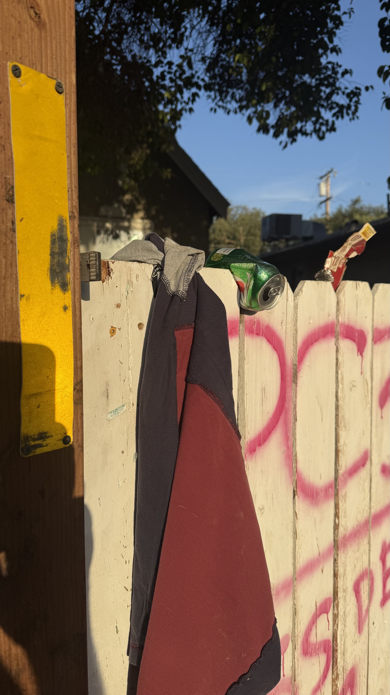
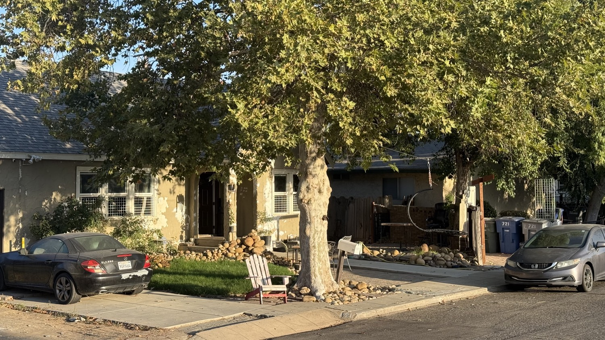
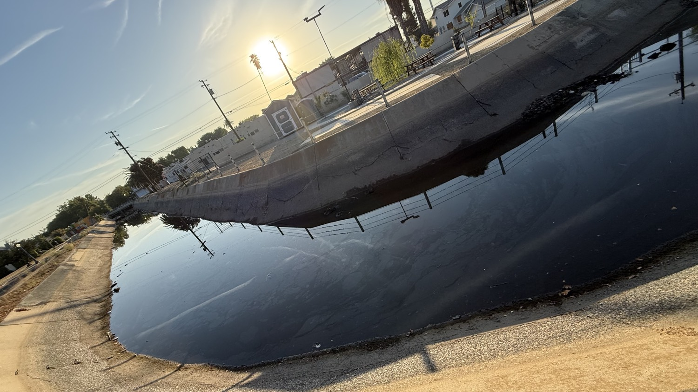

Every day the same ritual. Walk the fence line. Photograph what the night left behind. Document the canal. Record the park edge. Put the previous 24 hours on display so no one can claim they were not warned.



What the Code Actually Says
California Penal Code § 374.7 makes it a misdemeanor to litter or dump waste matter into a canal, channel, or within 150 feet of the high-water mark of any body of water.
First conviction: mandatory fine $250–$1,000. The fence does not negotiate. It simply states the law.

This is not abstract. This is the same drainage system that runs past the picnic tables and the portable toilets. The same water that reflects the morning sun. Every bottle and bag that goes in stays until someone removes it.




Shift
The warning phase is complete. The fence has stated the law in letters large enough to read from the street. The photographs of the previous 24 hours are public.
From this point forward the posture changes. Citizen arrest mode is active. Anyone who continues to dump into this canal after the written notice is no longer acting in ignorance.
The High Tower District keeps the record. The rest is enforcement.
High Tower District
721 E La Sierra · Fresno · 93728
Document. Display. Enforce.